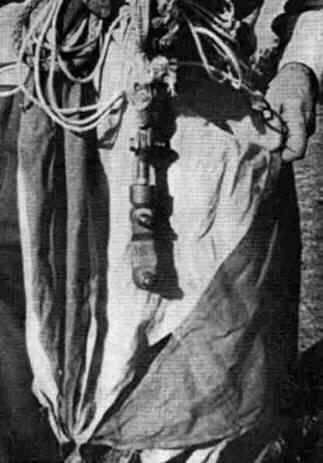
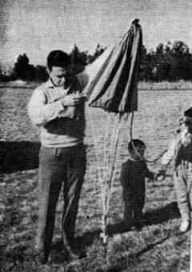

REMOLQUE
POR AUTOMOVIL
Ing. ROGELIO
BERTOLINI
Trabajo presentado en el Congreso Nacional de Vuelo a Vela
realizado en Zárate, Pcia. de Bs. As., Argentina
14 al 17 de Agosto de 1971
PALABRAS PREVIAS
Pocos días
antes de que se realizara en Zárate el último Congreso Nacional de Vuelo a Vela, aquí
en Córdoba tuvimos la idea de presentar en él un informe de las experiencias que desde
hace años venimos realizando en Juárez Celman con remolque por automóvil.
Lamentablemente el tiempo
disponible que muy escaso y el día anterior a la inauguración sólo pude entregarle al
presidente de la Comisión Técnica de la F.A.V.A.V. unos borradores totalmente
desordenados e incompletos, que se publicaron tal como estaban.
Por ese motivo quienes leyeron
esa publicación habrán encontrado discrepancias, errores, títulos equivocados,
superposiciones, conceptos difíciles de interpretar. etc.
Estas palabras previas son pues
para pedir disculpas por todo esto, pero creo que estaba justificado porque de todas
maneras queríamos que los asistentes al Congreso se enteraran, al menos someramente, de
la labor que veníamos realizando.
INTRODUCCION
Desde los
comienzos del vuelo a vela se ha venido utilizando el automóvil como un excelente medio
de realizar los envuelos. En nuestro país, donde hay grandes llanuras que permiten
disponer de pistas de suelo firmes, orientadas correctamente con respecto al viento y de
longitud suficiente y donde en cambio es muy raro encontrar, en las cercanías de los
centros poblados, colinas adecuadas para remolque por sandows, que fuera el tipo de
envuelo por antonomasia en Europa, el automóvil fue el auxiliar indispensable para la
práctica de nuestro deporte hasta que la formación de un parque de aviones
remolcadores permitió ir sustituyéndolo gradualmente,
hasta llegar al momento actual en que se puede decir que toda la actividad se realiza con
aviones.
Es indudable que el remolque por
avión brinda una amplitud de servicio tal que desde el punto de vista funcional es
inmejorable, pero dado el incesante aumento de sus costos de adquisición, mantenimiento y
operación se justifica la búsqueda de otro medio de envuelo que, aunque se utilice en
forma complementaria, disminuya los costos operativos. Por otra parte no hay que olvidar que el remolque por avión, como es obvio,
requiere pilotos remolcadores y muchas veces ocurre que en el momento de salir a volar no
hay ninguno en el campo; muchos buenos vuelos se han perdido por falta de un piloto
remolcador. En cambio un remolque por automóvil lo puede hacer cualquiera que sepa
manejar autos. Por todas estas razones un grupo de pilotos del Club de Planeadores
Córdoba inicialmente propuso la adquisición o construcción de un torno, por
considerar que era el elemento que solucionaría nuestros problemas.
Fue así que en la reunión de Comisión Directiva del
23/5/67 se me encargó la ejecución de los cálculos, planos y estimación de costo de
un torno. En octubre de ese mismo año presenté mi trabajo a la C. D. pero se hizo
evidente que la inversión inicial era superior a nuestros medios en ese momento.
Esto reactualizó nuestro interés por el remolque por
automóvil, sistema que además siempre fue defendido por algunos de nuestros pilotos
(Tacchi y Ríos por ejemplo) cuya principal ventaja con respecto al torno consistía en
que ya contábamos con el viejo Chrysler o con uno que otro vehículo facilitado por
algún socio del Club.
Luego de sucesivos cambios de ideas y algún intento
aislado de remolque con Baby nos presentamos a la C. D. Picchio, Tacchi, Ríos y yo y en
la reunión del 28/3/68 quedamos autorizados a efectuar una serie de pruebas para
determinar la factibilidad del sistema.
EXPERIENCIA DE VUELO
Luego de reunir los elementos
necesarios para efectuar los remolques, como se explica más adelante, el 1IV/68 empezamos
la actividad. Ese día había unos 15 Km/h de viento y luego de un par de remolques hechos
por Picchio con 450 m. de alambre, usando nuestro Ka 6 y el Chrysler, hice un remolque yo
con 570 m. de alambre y logré 460 m. de altura. Hacía más de 10 años que no efectuaba
un remolque por auto y además era la primera vez que usaba gancho ventral pues nunca
hasta la fecha me remolcaron por torno y sin embargo conseguí una buena altura. Con esto
quiero significar que el remolque por auto, tal como lo venimos realizando nosotros es
de fácil adaptación para un piloto con algunas horas de vuelo; eso sí se deben cumplir
las exigencias mínimas de seguridad.
Todos los que intervinimos en esta experiencia habíamos
hecho remolque por auto con anterioridad, pero ya sea con los primarios o con los Baby,
Hütter 17, Rhönbussard, etc. siempre utilizábamos gancho de nariz y alambre de no más
de 270 m. de largo. Ahora en cambio contamos con el gancho ventral con que vienen
equipados todos los veleros modernos gracias al empleo muy generalizado en Europa y EE.
UU. del torno y algo también del automóvil.
La diferencia entre uno y otro gancho es muy grande desde
el punto de vista de las posibilidades de remolque. El gancho de nariz no permite cabrear
tanto como el ventral pues por un lado el momento flector aplicado al fuselaje puede ser
importante afectando seriamente la estructura y por otro lado al llegar a cierta altura se
produce un cabeceo, que a veces es muy violento, y obliga al piloto a disminuir la
presión sobre la palanca para que cese y recién volver a cabrear suavemente. Todo esto
impide lograr las alturas que se consiguen con el gancho ventral.

Detalle del sistema de enganche del paracaídas.A partir del 1/5/68 hemos venido
realizando remolques con distintos vehículos, con distintas máquinas y con diversas
condiciones meteorológicas. Si bien las alturas logradas variaron mucho, estas
variaciones se debieron principalmente a fallas del automóvil de remolque.
A continuación doy algunas indicaciones útiles que
conviene tener en cuenta. Durante el decolaje hay que cabrear con cuidado hasta tener unos
5 a 10 m. de altura y luego seguir llamando suave pero firmemente hasta que la máquina
tenga unos 45º de inclinación con respecto a la horizontal. Algunas veces he subido con
más de esta inclinación pero me parece demasiada y no rinde bien el remolque.
Al comienzo del remolque el piloto debe estar muy atento
por un posible corte del alambre. En una oportunidad hice un decolaje muy exigido y se
cortó el chicote de soga cuando tenía muy pocos metros de altura y estando la máquina
demasiado cabreada pero como tenia suficiente velocidad piqué violentamente, recobré la
línea de vuelo y aterricé normalmente.
Se debe cuidar la velocidad en todo momento. Si no es
suficiente se sube poco y como es lógico puede llegarse a la pérdida y en cambio si es
demasiado elevada se le pueden causar esfuerzos grandes a la estructura del planeador.
Generalmente los manuales indican tanto la máxima velocidad admisible como el esfuerzo de
tracción máximo y mínimo también en el gancho. Esto último sirve para conocer cuál
es la fuerza mínima necesaria para lograr el ascenso, es decir que con menos no se logra
el envuelo.
El comando de profundidad debe ser accionado con suavidad,
especialmente al cabrear. No hay que olvidar que con el gancho ventral la palanca queda
muy liviana pero los esfuerzos de flexión en el ala son importantes.

Rogelio BartoliniUno de los problemas más difíciles
de resolver durante el remolque es acertar con la velocidad adecuada que en cada momento
debe tener el vehículo de remolque. Esto se agudiza cuando hay viento arrachado o cuando
en el curso de un remolque el planeador atraviesa zonas de ascendentes o descendentes y
mientras más alto se vuela más difícil es la apreciación para el remolcador.
Indudablemente que aquí la experiencia juega un papel importantísimo pues es
prácticamente imposible dar indicaciones meramente teóricas en especial cuando no se
cuenta con medios técnicos adecuados como tensiómetros o elementos de comunicación
entre piloto y remolcador
Nosotros ensayamos el uso de señales entre planeador y auto, como por ejemplo mover
timón de dirección en caso de que la velocidad fuera excesiva o hacer oscilar el
planeador alrededor de su eje longitudinal, moviendo alerones, en caso de que fuera poca,
pero esto no resulta efectivo pues dada la gran distancia entre ambos no se aprecia con
claridad la señal y además puede una racha moverlo y el remolcador interpretar que es
una señal.
Indudablemente que un contacto por radio soluciona el
problema. Un par de Walkie -Talkie fueron ensayados con resultados diversos pues en
algunos casos el motor del auto producía mucha interferencia.
No sé qué eficacia podrá tener el uso de un tensiómetro. Pienso que si las
indicaciones son precisas, la lectura es fácil y clara, el cuadrante se puede ubicar en
un lugar bien visible del tablero del auto y la sensibilidad es buena ha de ser el
instrumento ideal pues de esa manera conociendo de antemano qué tensión requiere cada
máquina el remolcador se limitará a mantener dicha tensión pudiendo entonces el piloto
regular la velocidad fácilmente. Pero claro está, se trata de un instrumento difícil
de conseguir aunque si los clubes se deciden a realizar remolques por auto en forma
intensa creo que podremos solucionar de alguna forma este asunto.
El momento más crítico del remolque por auto indudablemente es el del
corte. Las exigencias de seguridad en este asunto deben cumplirse indefectiblemente, para
evitar situaciones apremiantes. Considero oportuno recordar que algunos accidentes graves
se produjeron por fallas en el corte.
a) Tanto el gancho del planeador como el del auto deben estar en
perfecto estado de funcionamiento es decir no deben acusar desgastes excesivos, deben
estar limpios y lubricados y bajo ningún
concepto se admitirá que presenten síntomas de atascamientos. Otro tipo de falla de los
ganchos es que las dimensiones del aro delantero no sean las correctas y en ese caso
pueden tender a encajarse las argollas. Nuestro Phoebus tenía ese problema y fue
necesario modificarlo. Todo lo que se insista en este punto de los ganchos es poco. De su
seguro funcionamiento depende la vida del piloto.
b) Las argollas deben tener también las dimensiones correctas y
el material adecuado pues de lo contrario deben deformarse y en ese caso también se
podrán atascar.
c) El piloto y el remolcador, como así también los ayudantes
convendrán previamente qué actitudes adoptaran en caso de falla del corte. Puede ocurrir
que falle el gancho del planeador pero que accione bien el del auto. En ese caso el
alambre quedará colgando de aquél pero el piloto no puede verlo por lo que se le deberá
avisar. Nosotros convinimos que el auto hiciera círculos continuos en la pista con lo que
el piloto advertiría lo que estaba ocurriendo.
La forma conveniente de operar en la
faz final del remolque es como sigue: unos 200 m. antes del extremo de la pista del
remolcador, cualquiera sea la altura tomada por
el planeador, disminuirá la velocidad suavemente con lo que el planeador también bajará
la suya y el piloto se verá obligado a picar para evitar la pérdida. Generalmente en
este caso el gancho acciona sólo porque son automáticos. De todas maneras el piloto
deberá tirar varias veces del disparador para asegurarse el corte. Cuando el remolcador
vea que el paracaídas comienza a caer deberá acelerar rápidamente para estirar el
alambre y evitar la formación de "galletas" en él; a todo esto el ayudante que
va en el auto debe estar bien atento y con la soga de accionamiento del gancho en la mano
y muy poco antes de que el paracaídas toque el suelo tirará de ella. De esta manera el
alambre queda bien estirado en la pista. Desde luego que la distancia de 200 m. mencionada
es sólo indicativa pues depende del viento, de la altura tomada por el planeador, etc.
En caso de que falle el corte y el planeador quede con el
alambre colgando considero que lo más conveniente es sacar frenos y bajar virando
alrededor del auto hasta cerca del suelo y aterrizar lo más cerca posible de aquél.
Desde el 1º de mayo de 1968 hasta la fecha se han
realizado 86 envuelos discriminados así:
PIRAT
6
Ka 6
47
PHOEBUS
15
BABY III
2
BOCIAN
14
S. AUSTRIA SH 2
TOTAL
86 ENVUELOS
Altura máxima, lograda en varias
oportunidades: 460 m.
Tiempo de remolque desde iniciación de carreteo hasta el
corte: 55s. a 1m. 10s.
Lo que sigue es un análisis de las condiciones que,
según mi experiencia sobre este tema, deben cumplir los elementos que intervienen en un
remolque por auto:
a) Pista. Todos los vuelos los efectuamos en la pista
Norte-Sur del Aeródromo Juárez Celman, que tiene 1.500 m. de longitud y 50 m. de ancho.
Como se vio anteriormente la longitud de esta pista permite tomar buenas alturas, cosa
que hemos podido comprobar aun en días de poco viento. La longitud de pista y la
intensidad de viento son dos factores que están íntimamente relacionados. Contando con
viento fuerte se puede subir bien con pistas cortas pero hay que tener en cuenta que
mientras más fuerte es el viento más riesgosa es la operación.
Con viento cruzado, digamos de unos 45º, se puede operar
bien pero en el decolaje el planeador debe salir bien orientado, el ayudante que corre la
punta de ala lo debe mantener alineado correctamente y el piloto debe evitar que el
planeador le "gane". Esto en especial para el caso de volar con los Standard
Austria. Una vez en el aire se puede optar por enfrentar el viento o seguir en línea con
la pista; claro esta que se producirán desplazamientos transversales, que no afectan al
vuelo en sí, pero en cambio pueden hacer que el alambre caiga fuera de la pista. Si el
campo es grande el alambre caerá en él; si la pista está al borde del campo y a
sotavento suyo el alambre caerá fuera. Naturalmente pueden producirse trastornos e
incluso accidentes si hay cables de alta tensión o caminos o edificaciones en las
cercanías. Estas cosas deberán tenerse en cuenta cuando se remolque con viento
cruzado.
b) Automóvil. Se utilizaron los siguientes vehículos:
Chrysler
mod. 1930 con motor y caja de Estanciera IKA.
Chevrolet mod. 1938.
Pick-up Chevrolet 1965.
Baqueano
IKA mod. 1964.
Gladiator
IKA Tornado caja ZF 4 velocidades.
Ford
Falcon 1966.
Cuando hay
viento digamos 20 Km/h., la velocidad del auto con respecto al suelo durante el remolque
se reduce bastante y la carrera de decolaje también por lo que la potencia necesaria es
menor. Cuando no hay viento y más aún si la pista es corta se requiere una gran
aceleración para qua la carrera de decolaje no sea muy larga y por lo tanto la potencia
del auto debe ser grande.
Ahora bien si disponemos de un vehículo potente y de
mucha salida, como por ejemplo un Torino TS, al aplicarle toda la potencia las ruedas
motrices patinan desaprovechándose la energía sin conseguir la aceleración que se
busca. Algo puede mejorarse agregando peso al baúl pero no es mucho el peso que
razonablemente se puede agregar y por otra parte este peso aumenta la inercia del
vehículo y resulta un factor negativo.
Una solución más racional pareciera ser la propuesta por
nuestro amigo Tacchi que consiste en colocar el gancho de tracción en un soporte
apropiado a mayor altura que la acostumbrada, digamos 1,50 m. a 2 m. sobre el nivel del
suelo; en este caso la tracción del alambre origina un momento que disminuye la carga
sobre el suelo de las ruedas delanteras y aumenta la de las traseras, mejorando así las
condiciones de adherencia.
Esta solución no ha sido experimentada aún por nosotros
de modo que sólo es una idea que creo convendría poner en práctica.
c) Alambre de tracción. La selección del elemento
tractor adecuado es sencilla: hay que optar por soga, cable de acero o alambre de acero.
La soga queda descartada de inmediato por su gran
elasticidad, baja resistencia al desgaste, gran volumen que dificulta su manipuleo
estando arrollada, precio, etc.
Quedan pues el alambre de acero y el cable de acero.
Una ventaja del cable es que puede utilizarse tanto para
remolque por automóvil como por torno con tambor de cualquier diámetro.
Cabe agregar que el alambre puede también usarse para
remolque por torno, a condición de que su tambor de arrollamiento tenga un diámetro
suficiente como para no producir deformación permanente en el alambre.
De todos modos para remolque por automóvil considero que
el alambre es más adecuado por las siguientes razones principales:
1.
Menor costo de adquisición.
2.
Menor vulnerabilidad al desgaste,
corrosión, fracturas por flexión y otros factores de deterioro. Se debe tener en
cuenta que los alambres que forman un cable de acero de 5 mm. de diámetro, de construcción normal (6 x 7) tienen
alrededor de 5 o 10 mm. de diámetro, por lo que la abrasión que se produce al ser
arrastrado disminuye considerablemente su vida útil.
3.
Mayor facilidad de
manipuleo pues su mayor rigidez permite arrollarlo con comodidad en un carretel de
diámetro adecuado. El cable en cambio tiende a enredarse más fácilmente y es
imprescindible el uso de guantes de cuero para evitar heridas producidas por los
alambres cuando empieza a cortarse.
Por todo lo que acabo de expresar en nuestras pruebas
utilizamos alambre de acero. Se compró un rollo de 630 mts. de largo del tipo llamado San
Martín reforzado, galvanizado, de sección elíptica.
En uno de sus extremos se aplicó el consabido juego de
argollas de remolque y en el otro un acoplamiento para conectar un chicote de soga de
remolque de 4 mts. de largo, que tiene incorporado un paracaídas de tela de 0,80 mts.
de diámetro. El uso de este paracaídas es indispensable pues al caer el alambre luego
del corte se mantiene estirado mientras el auto continúa avanzando hasta que poco antes
de tocar el suelo recién se desprende de aquél, de esta manera el alambre no se enreda y
si el piloto mantiene el planeador en forma adecuada (a barlovento de la pista durante el
remolque aun con viento cruzado), puede lograr que el alambre caiga en ésta.
d) Gancho. En los automóviles utilizados se
instaló un gancho común no automático del tipo usado en Baby. No es mucho lo que se
puede hablar de los ganchos, pero hay una condición imprescindible que debe cumplir: funcionamiento seguro con cualquier ángulo del
alambre. Han ocurrido muchos casos en que por diversas circunstancias no se desprendió el
alambre del gancho del planeador al finalizar un remolque, y en ese caso se debe
desprender desde el automóvil. La ubicación más común es la parte posterior del
coche más o menos a la altura del paragolpes. Sin embargo no es lo más apropiado porque
durante el decolaje la atracción del alambre ayuda poco a aumentar la adherencia de las
ruedas al suelo y cuando el planeador ha tomado altura y por ende el ángulo del alambre
respecto al suelo es mayor, la componente vertical de la tracción reduce la carga normal
sobre las ruedas posteriores disminuyendo también en este caso la adherencia.
COMPARACION
CON EL REMOLQUE POR TORNO
Quiero
advertir que no tengo experiencia directa con respecto al remolque por torno pero no
obstante haré algunas consideraciones que creo son razonables. En primer lugar enumeraré
algunas ventajas e inconvenientes de ambos sistemas.
a) Remolque por automóvil.
Ventajas: Se puede
realizar con cualquier vehículo automotor de potencia media.
Puede utilizarse cable, alambre,
soga, etc., aunque tenga nudos e incluso combinaciones de ellos.
El vehículo de remolque se puede
utilizar para todas las otras tareas.
Inconvenientes:
Requiere indefectiblemente una pista adecuada para que el vehículo de remolque pueda
desplazarse.
El consumo de combustible es algo
mayor que el de un torno.
b) Remolque por torno.
Ventajas: Requiere
sólo una pista para el decolaje del planeador ya que el torno puede estar ubicado fuera
de ella.
Menor consumo de combustible.
Inconvenientes:
Generalmente debe funcionar con cable que es más caro y difícil de manipular que el
alambre.
Requiere un vehículo auxiliar para
traer de vuelta el cable; este vehículo puede ser muy liviano.
El torno sólo sirve para remolcar,
es decir que es una inversión de capital para un uso específico.
Con lo que antecede ya podemos tener una idea aproximada de la cuestión. Deseo destacar
que si se dispone de una buena pista, lisa y de suficiente longitud, el remolque por
automóvil se puede efectuar sin inconvenientes con sólo conseguir un vehículo adecuado,
cosa más fácil de obtener en nuestro país que un torno.